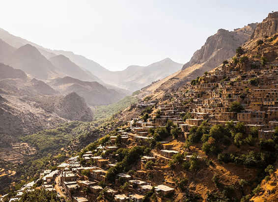

NATIONAL GEOGRAPHIC

Try this new long distance cycling trail for a different perspective on Wales
TRAVEL
Draped in heather, studded with boulders and capped by jutting peaks, the mountainous landscape feels unimaginably ancient. Already laced with pathways, this elemental region of North Wales can now be experienced on a multi-day cycling adventure thanks to a new route from Cycling UK, the charity responsible for developing other long-distance trails such as King Alfred’s Way and the West Kernow Way.
Opened in August, Traws Eryri begins in Machynlleth, winding 122 miles through untamed portions of Eryri National Park, the Mawddach Estuary and the forests of Coed-y-Brenin before reaching the medieval town of Conwy on Wales’s north coast. Newly negotiated access rights mean that cyclists can explore this spectacular landscape almost entirely off-road, with snaking forest trails giving way to rocky mountain scrambles. The route is certainly challenging, with more than 13,000ft of climbing, and takes four or five days to complete if tackling it in full. Those wanting to pedal at a more relaxed pace have the option of breaking the trail into sections using the railway stations at Machynlleth, Barmouth, Betws-y-Coed and Conwy, the last of which is home to one of the UK’s best-preserved castles a sprawling and turreted stronghold that looms above the town like an all-seeing sentinel.
1. Trans Cambrian Way
Try linking Traws Eryri with this classic Welsh trail, which begins on the English border and concludes just south of Machynlleth. By the time you reach the market town, you’ll have travelled 108 miles, climbed 13,000ft and passed through the moody Black Mountains.
2. King Alfred's Way
Pedal back in time with this 217-mile circular route around historic Wessex. The trail begins and ends in Winchester, the supposed resting place of Alfred the Great, passing ancient pagan monuments and cutting through the sprawling South Downs.
3. The Caledonia Way
Stretching up to Inverness, this 234-mile route kicks off on the Kintyre Peninsula on Scotland’s west coast. From here, it heads north, taking in views of Jura and Arran before meeting with Ben Nevis and the Great Glen Way.
Comments :
- john Very good
- john Very good
Leave a Reply
Your email address will not be published. Required fields are marked*
Related posts:
-
Here’s how World Heritage status helps destinations around the world
The Trans-Iranian Railway, the great spa towns of Europe, a lighthouse in France, 14th-century frescoes in Italy, adobe mosques in Côte d’Ivoire, an ancient solar observatory in Peru, and a “floating brick” temple in India
View article -
 This wine festival only happens once every 20 years
This wine festival only happens once every 20 yearsThis summer, the quiet town of Vevey tops the oenophile itinerary. Starting on July 18, 2019, and running over three weeks, the village of less than 20,000 will welcome around 400,000 visitors for the Fête des Vignerons
View article -
 Inside the Irish ‘hell caves’ where Halloween was born
Inside the Irish ‘hell caves’ where Halloween was bornIn the middle of a field in a lesser known part of Ireland is a large mound where sheep wander and graze freely. Had they been in that same location centuries ago, these animals might have been stiff with terror
View article